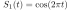
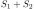
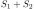
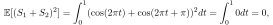
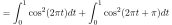
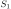
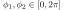
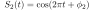
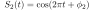
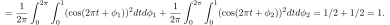

Next: September Homography Up: Blog posts 2022 Previous: June Gaussian vs. impulsive Contents
Let us consider two sinusoidal signals of opposite phases during the time
:
 and
 . Obviously, the signals cancel each other completely, and the mean power of the additive signal  is just 0:
. Obviously, the signals cancel each other completely, and the mean power of the additive signal  is just 0:
|  | (1) |
We could try to add the powers of the signals separately together:
|  | (2) | ||
 |
Let us assume that  and  are two signals. We have that
![$\displaystyle \mathbb{E}[(S_1 + S_2)^2] = \mathbb{E}[S_1^2 + S_2^2 + 2 S_1 S_2]= \mathbb{E}[S_1^2] + \mathbb{E}[S_2^2] + 2 \mathbb{E}[S_1 S_2].$](img59.svg) |
(3) |
![$\mathbb{E}[(S_1 + S_2)^2] = \mathbb{E}[S_1^2] + \mathbb{E}[S_2^2] $](img60.svg) holds if and only if the cross-correlation
i.e., if the signals and are not correlated—this is not the case with our initial signals, as then the cross-correlation is given by
holds if and only if the cross-correlation
i.e., if the signals and are not correlated—this is not the case with our initial signals, as then the cross-correlation is given by
We used deterministic signals, but the same remarks apply to random signals. For example, for uniformly random phases
, let
 and
;
and
;
 |
|||
 |
|||
|  |
![$\mathbb{E}[S_1 S_2]$](img70.svg) is 0 for the two random signals and , i.e.,
is 0 for the two random signals and , i.e.,
![$\mathbb{E}_{\phi_1,\phi_2} \left[\mathbb{E}\left[ S_1S_2\right]\right] =0$](img71.svg) .
.
References: